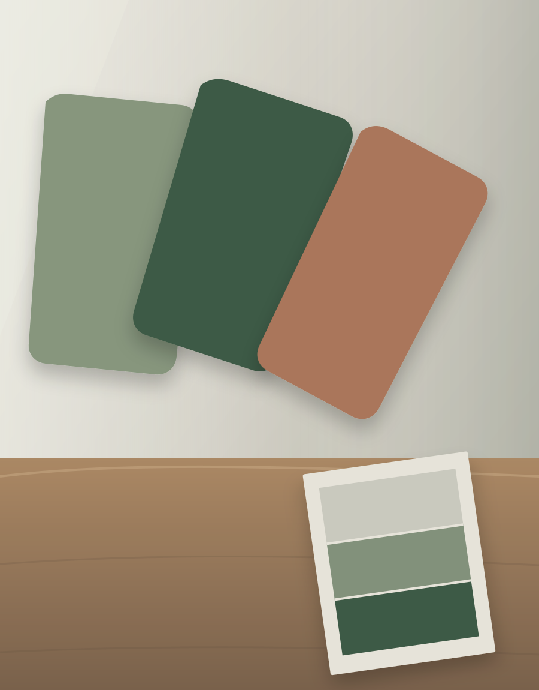

Вы создаёте
свой дом
Приходите с фотографией, коллажем или готовым проектом — поможем собрать материалы в единую картину.
Начать подбор ↗Интерьерный салон · Ростов-на-Дону
Покажите проект или идею — подберём отделочные материалы для цельного интерьера.

Приходите с фотографией, коллажем или готовым проектом — поможем собрать материалы в единую картину.
Начать подбор ↗Обсудим отделку, сочетания и комплектацию вместе с вами и вашими заказчиками.
Обсудить проект ↗От идеи к подбору
Подойдёт проект, чертёж, коллаж или фотография.
Сопоставим цвет, рисунок, фактуру и детали.
Разберём, что нужно для вашего проекта и какой следующий шаг.
Материалы для интерьера
А если пока не знаете, с чего начать, покажите проект — поможем соединить материалы между собой.

01 / цвет и фактураКраски и покрытия↗ 02 / объём и ритмПанели и лепной декор↗
02 / объём и ритмПанели и лепной декор↗
 03 / природные материалыКаменный шпон↗
03 / природные материалыКаменный шпон↗
 04 / линии и поверхностьСтеновые панели↗
04 / линии и поверхностьСтеновые панели↗
Фото товаров загружены с martdecor.ru; карточка красок — концепция цветовых выкрасов. Ассортимент и наличие уточняются.

В фокусе — ваш замысел
В салоне работают с проектами, чертежами, коллажами и фотографиями. Можно прийти с тем, что уже есть, и обсудить подбор материалов.
Обсудить мой проект ↗Можно увидеть вживую
Сравните образцы, приложите материалы друг к другу и обсудите проект со специалистом.
Ростов-на-ДонуПервый шаг
Оставьте контакт и коротко опишите проект. Можно обсудить визит в салон или подбор по фото и дизайн-проекту.